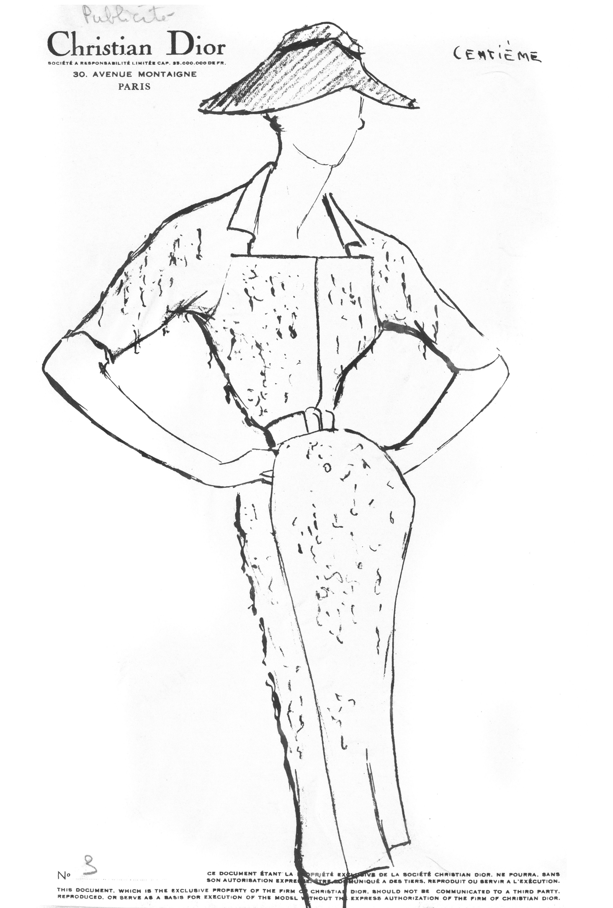
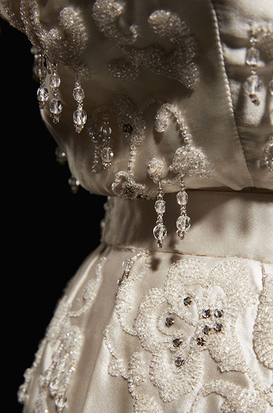
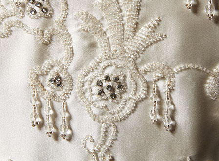
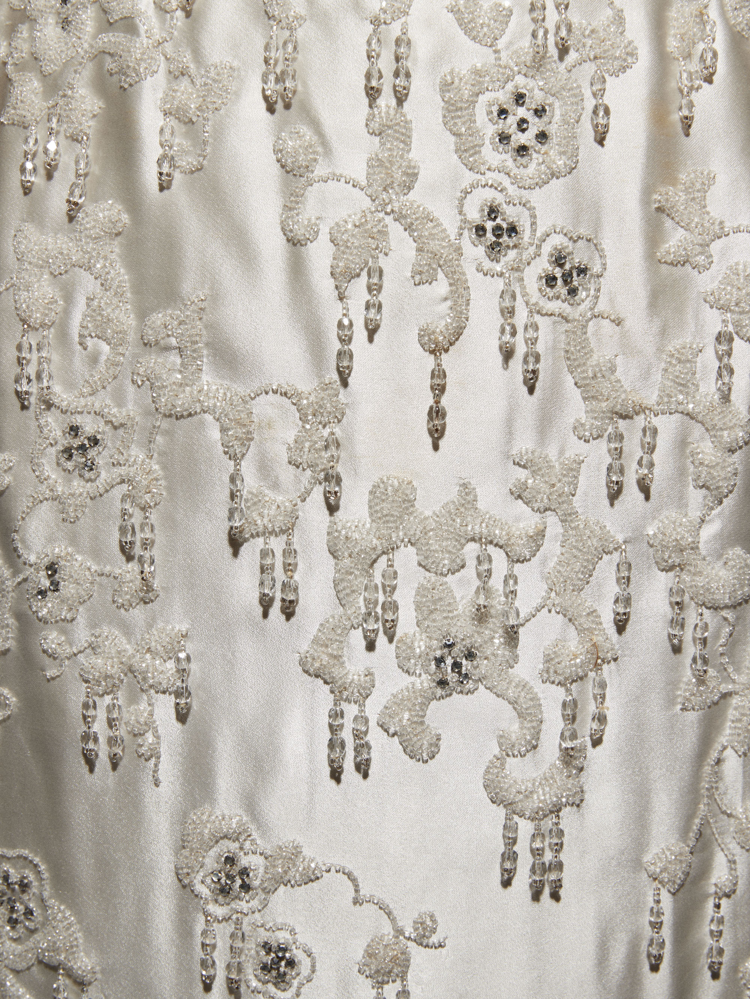
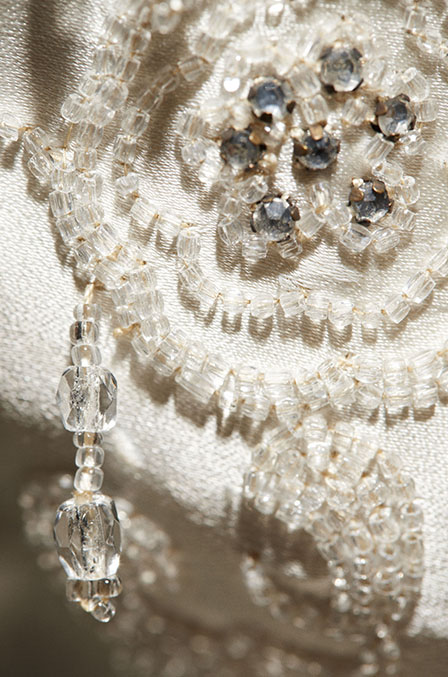

Press Sketch
Press sketch of Centième, which means hundredth, perhaps referring to the beadwork.
Dior Héritage Collection, Paris




The embroidery house, Vincent, used only 4 different clear, smooth, and faceted beads, and one size of crystal to make the sumptuous 18th-century style pattern.
Photos Laziz Hamani


